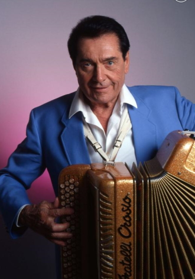

André Edmond Verschuere, dit André Verchuren, est un accordéoniste français, né le 28 décembre 1920 à Neuilly-sous-Clermont, dans l'Oise, et mort le 10 juillet 2013 à Chantilly.
En 1936, à l'âge de 16 ans, il remporte le concours international d'accordéon de Soignies, en jouant l'ouverture des Saltimbanques debout, contre les codes de l'époque. Il est l’accordéoniste ayant vendu le plus de disques, avec plus de 80 millions d'unités vendues1.